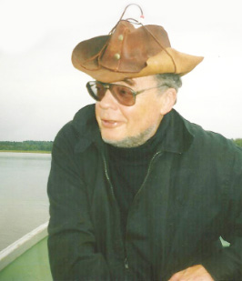

Fiftieth Anniversary of research and teaching by
Viktor Pavlovich Maslov
(Theoretical and Mathematical Physics, 155(2): 674–677 (2008))

Viktor Pavlovich Maslov began teaching in 1957 after defending his candidate dissertation under the supervision of Professor S. V. Fomin. This moment can also be considered the start of his independent research because from then on, his strongest side began appearing, the ability to uncover the mathematics underlying the most important modern problems in the natural sciences and to pose relevant problems whose solutions advance not only mathematics itself but also science as a whole.
More than 50 years ago, physicists discovered and constructed microwave masers. To build nanowave (light) lasers, in addition to an active substance that when illuminated would not absorb but amplify the beam passing through it, required developing a reflecting system that would retain only one mode while allowing the rest of the beam to leave the device. The young mathematician Maslov suggested a possible type of such a construction in 1957. It turned out that if a sufficiently narrow planar waveguide is bent slightly, then it becomes possible to ensure that only one mode is retained while the others “jump out” of the waveguide. Maslov showed that bending the axis of a very narrow waveguide results in a certain effective potential (refractive index) in the longitudinal direction. This potential contains one stable term −k2/4, where k is the curvature of the waveguide axis. If the axis is straight in some waveguide segment, then the curvature and potential of this segment are zero. Bending the waveguide then results in increasing the curvature (and decreasing the potential −k2/4). Next, the waveguide axis is straight again, and the curvature and potential are again equal to zero. A negative potential well is thus formed. The Helmholtz equation for a monochromatic electromagnetic wave in a bent narrow waveguide leads to the one-dimensional Schrodinger equation with the potential describing this well. A discrete spectrum exists in this case. If the bend is small, then the depth of the well is sufficiently small, and the well contains a single eigenvalue and therefore exactly one eigenmode. For a somewhat greater bend, there can be two, three, and so on eigenmodes. A wave trap is thus formed. (We note that the standard quasistationary modes, which can be present in such a system because of reflection from the open ends, are exponentially small compared to the waveguide width-to-length ratio.)
Maslov was the speaker at three consecutive seminars headed by A. M. Prokhorov, who was determined to comprehend this theory. Toward the end of the discussion, one of the participants bluntly concluded that it was technologically impossible, for example, to construct a single-mode planar laser based on this theory because techniques for creating thin films and ultranarrow channels in them did not exist. At the same time, Maslov’s patent application was rejected (by the same opponent) on the same grounds. But already in 1959, the world saw the birth of the first planar transistor, and R. Feynman published a paper on the prospects of advancing into the nanoscale domain and uttered his now legendary phrase while speaking at Caltech: “There’s plenty of room at the bottom.” It can be said that Maslov’s work published in 1958 as a short, purely mathematical paper in Doklady Akademiki Nauk SSSR was the first example of a nanostructure suggested by a mathematician. The development of this idea has been very fruitful within mathematics itself. Maslov gave a formal mathematical description of this type of mixed system with deterministic (classical) and simultaneously wave (quantum) behavior in his book Perturbation Theory and Asymptotic Methods (MSU Publ., Moscow, 1965; English translation: Mir, Moscow, 1965). The principal mathematical objects introduced in that book are Lagrangian submanifolds in phase space (so named by Maslov), the “canonical operator” assigning wave functions to such submanifolds, and an integer index andinteger cohomology class (later named after Maslov).
Subsequently, Maslov and his students, who were then teaching at the Moscow Institute of Electronic Machine Building, Lomonosov Moscow State University, and the Moscow Institute for Physics and Technology, developed a mathematical theory of the propagation of quantum signals in curved quantum wires and nanotubes in a magnetic field with the spin taken into account. They developed a method for describing the propagation and interaction of localized nonlinear waves in nonintegrable models asymptotically. They also identified and studied new phase structures describing the propagation of localized waves in the presence of a magnetometric curvature and discovered new effects in wave and quantum systems with frequency resonances and in thin-film systems in a magnetic field.
In 1963, Doklady Akademiki Nauk SSSR published Maslov’s fundamental work on using complex solutions of the equations of classical mechanics in the shadow domain and in tunneling domains to construct exponential asymptotic expressions with respect to the short wavelength or the Planck constant. This work was delivered at conferences and seminars and was well received by physicists. It was immediately continued by Yu. A. Kravtsov (Lebedev Physical Institute), who entitled his work “On Maslov’s complex beams,” and S. V. Khudyakov (Kurchatov Institute for Atomic Energy), and a subsection explaining the formulas for overbarrier reflection based on complex trajectories appeared in the next edition of Quantum Mechanics by L. D. Landau and E. M. Lifshitz. This concept subsequently led to the theory of Maslov’s complex germ and to the theory of instantons, which were developed in Maslov’s books Operator Methods (Nauka, Moscow, 1973; English translation: Operational Methods, Mir, Moscow, 1976) and The Complex WKB Method in Nonlinear Equations (Nauka, Moscow, 1977; English translation: Birkh¨auser, Basel, 1994).
The next impulse that essentially changed Maslov’s direction of research was his involvement with the group planning the construction of the sarcophagus for the Chernobyl nuclear power plant. The process of overheating the heap that was formed there is described by a very complicated boundary value problem for a nonlinear system of partial differential equations. The analysis of this problem, which in particular involved the equation of state and Darcy’s law, by Maslov and his collaborators allowed discovering a bifurcation point passing which results in a radical change in the cooling regime of the damaged block: from a convective to a molecular diffusive regime. The sarcophagus had to be built such that the resultant regime of convective cooling due to natural ventilation through holes at the bottom of the heap would not be violated: the bifurcation point (regime change) must not appear. High-temperature asymptotic analysis allowed solving this complicated nonlinear boundary value problem. The ideas put forward in working on the sarcophagus construction laid down a foundation of a whole branch of mathematical investigations, which in particular were reflected in a series of works initiated by Mathematical Modeling of the Cooling Process of the Damaged Block at the Chernobyl Nuclear Plant by V. P. Maslov, V. P. Myasnikov, and V. G. Danilov (Nauka, Moscow, 1987) and then continued in the book Mathematical Modeling of Heat and Mass Transfer Processes by V. P. Maslov, V. G. Danilov, and K. A. Volosov (Nauka, Moscow, 1987), papers on overheating, and joint works by V. P. Maslov and I. A. Molotkov published in recent years. These works brought Maslov an earned reputation as an expert in modeling catastrophic phenomena. At this time, he became head of a laboratory at the Institute for Problems of Mechanics, Russian Academy of Sciences, now called the laboratory of “Mechanics of Natural Catastrophes.”
If only a few talented students worked with Maslov in the 1960s, from the 1970s, already dozens of mathematicians were involved in investigations following Maslov’s works both in Russia and worldwide. In the 1980s and 1990s, Maslov and his collaborators, students, and students of his students (V. P. Belavkin, V. V. Belov, K. A. Volosov, G. A. Voropaeva, E. M. Vorobiev, Yu. M. Vorobiev, Z. N. Golubeva, I. A. Gordeeva, V. V. Grushin, A. G. Davtyan, V. G. Danilov, S. Yu. Dobrokhotov, V. L. Dubnov, P. N. Zhevandrov, M. V. Karasev, G. V. Koval’, A. A. Konstantinov, V. N. Kolokol’tsov, V. V. Kosyanchuk, V.V.Kucherenko, V.E.Nazaikinskii, E.M.Novikova, G.A.Omelyanov, A.V.Pereskokov, A.E. Ruuge, S. Ya. Sekerzh-Zen’kovich, B. Yu. Sternin, S.E. Tariverdiev, V. A. Tsupin, A. M. Chebotarev, V.M. Chetverikov, A. I. Shafarevich, O. Yu. Shvedov, and others) continued investigating the problems listed above.
The broad spectrum of interests of Maslov’s scientific school is reflected in the Mathematical Subject Classification (MSC2000) and also in established terminology. We give some facts. Each MSC classification embraces a wide circle of specific topics. Maslov’s name enters the names of two classifications: 53D12 – Lagrangian submanifolds, Maslov index; 81Q20 – Semiclassical techniques including WKB and Maslov methods. There is also an MSC classification devoted to a research avenue opened by Maslov: 35S30 – Fourier integral operators. Although it does not contain Maslov’s name explicitly, it is known that Maslov invented these operators. In the introduction to his book, F. Treves wrote that “I kept my allegiance to the established term ‘integral Fourier operator,’ although I am willing to agree that this term is not particularly good, and calling such operators Maslov operators would possibly do more justice” (Introduction to Pseudodifferential and Fourier Integral Operators,Vol.2,Fourier Integral Operators, Plenum, New York, 1980; the quotation is translated from the Russian translation Introduction to the Theory of Pseudodifferential Operators and Fourier Integral Operators, Vol. 2, Mir, Moscow, 1984, p. 13).
We give statistics of terms related to Maslov’s name appearing on the Internet. These numbers reflect the so-called “most relevant” search results in Google and may vary with time:
– Maslov index, 554
– Maslov’s canonical operator (a notion introduced by Maslov and more commonly called Fourier integral operators), 500
– Lagrangian submanifold (a notion introduced by Maslov), 475
– Maslov class, 254
– Maslov method, 149
– Maslov cycle, Maslov cocycle, 143
– Maslov phase, 116
– Maslov form, 105
– Maslov bundle, 101
– Maslov dequantization, 99
– Maslov number, 93
– Maslov quantization, 84
– Maslov integral, 75
– Hugoniot–Maslov chain, 69
– Maslov correction, 55
– Maslov seismogram, Chapman–Maslov seismogram, Kirchhoff–Maslov seismogram, etc., 40
– Maslov representation, 33
A query to the Internet bookstore Amazon.com for books in which the term “Maslov index” is used returns a list of more than 230 monographs and textbooks. These include books not only on number theory, knot theory, geometry, quantum mechanics, optics, and mathematical physics but also on chemistry, philosophy, and even medicine and mathematical economics. This list contains six books relating to nanotechnology.
To characterize the half-century-long career of Academician Maslov, it can be said that he has always been a “maverick” in science. His works seem paradoxical at first and therefore typically win recognition (sometimes being rediscovered) only after a significant lapse of time after their appearance.
The principal affliations of Maslov have always been and still are educational institutions: Lomonosov Moscow State University and the Moscow State Institute of Electronics and Mathematics; this tradition of a link between teaching and research is continued by many of his students, who are heads of departments in several institutions for higher education in Russia, in particular, the newly opened Department of Nanotechnology and Informatics at Moscow Institute for Physics and Technology.
Yu. S. Osipov, President, Russian Academy of Sciences
V. A. Sadovnichii, Rector, Lomonosov Moscow State University
D. V. Bykov, Rector, Moscow State Institute of Electronics and Mathematics
F. L. Chernous’ko, Director, Institute for Problems of Mechanics, Russian Academy of Sciences
A. A. Logunov, Editor-in-Chief, Theoretical and Mathematical Physics
S. Yu. Dobrokhotov, Head, Laboratory for Mechanics of Natural Catastrophes, Institute for Problems of Mechanics, Russian Academy of Sciences
M. V. Karasev, Head, Department of Applied Mathematics, Moscow State Institute of Electronics and Mathematics